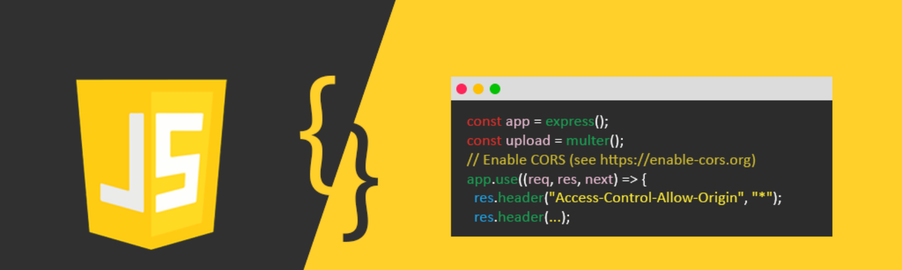

JS is useful to start with an overview of the language's history. JavaScript was created in 1995 by Brendan Eich while he was an engineer at Netscape.
JavaScript was first released with Netscape 2 early in 1996. It was originally going to be called LiveScript,
but it was renamed in an ill-fated marketing decision that attempted to capitalize on the popularity of Sun Microsystem's Java language — despite the two having very little in common.
This has been a source of confusion ever since.
